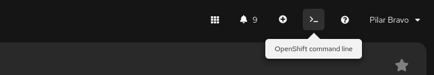
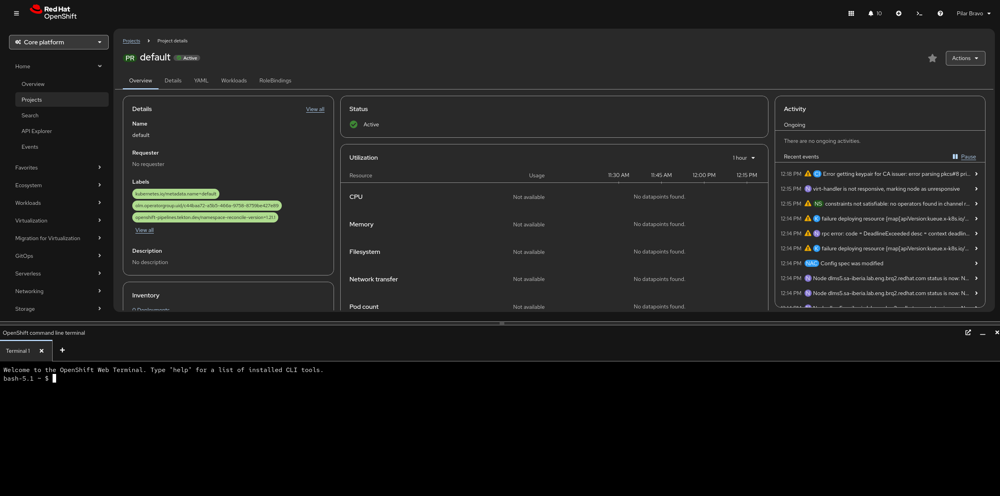

The embedded web terminal
The embedded web terminal in the OpenShift Container Platform web console provides a command-line interface directly within your browser.
To access the embedded web terminal, click the terminal button in the top right corner of the web console.

Here are the specific advantages it provides:
Zero Installation & Maintenance
The terminal is entirely browser-based, meaning you don’t need to install or update the OpenShift CLI (oc) or Kubernetes CLI (kubectl) on your local machine.
-
Pre-installed Tooling: It comes "out of the box" with a massive suite of tools, including
oc,kubectl,helm,kn(Serverless),tkn(Pipelines), and utilities likejqandgit. -
Always Up-to-Date: The tools in the web terminal are automatically matched to the version of the cluster you are running, preventing "version mismatch" errors.
Automatic Authentication
One of the most tedious parts of working with Kubernetes is managing login tokens and context switching.
-
Instant Login: The web terminal uses your existing console session. When you open it, you are already logged in with your current user permissions and scoped to the project you were just viewing.
-
Security: It eliminates the need to store sensitive kubeconfig files or long-lived tokens on your local laptop.
Contextual Awareness
The terminal is tightly integrated with the console’s UI.
-
Project Sync: If you are looking at a specific project (namespace) in the Developer perspective and open the terminal, it defaults to that project automatically.
-
Side-by-Side Troubleshooting: You can keep the terminal open as a "drawer" at the bottom of the screen. This allows you to watch logs or resource statuses in the GUI while simultaneously running commands to fix issues.
Accessibility in Restricted Environments
For many developers in highly regulated industries (like banking or government), installing custom binaries on a work laptop is blocked by IT policy.
-
Bypass Local Restrictions: Since the terminal runs as a pod inside the cluster, you only need a web browser to perform advanced CLI tasks.
-
Low Bandwidth: It is often more responsive than a local CLI when working over a slow VPN, as the actual "work" is happening within the cluster’s network.
Multi-User Isolation
Every time a user opens a web terminal, OpenShift provisions a dedicated, private pod for that session.
-
Customization: Users can customize their shell environment during the session.
-
Resource Control: Admins can set quotas on these terminal pods to ensure that developers don’t accidentally consume too many cluster resources while running CLI tasks.
